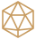

Раунд 3 Эллиан Гоблин Мира
Выбор · Геометрия · Туман · Карта
Мастер
Компактная инициатива, общий блок инструментов и настроек, временные карточки токенов и панели подготовки.
Открыть стол мастера →
Одна визуальная система для мастера и игрока: лесной зелёный, тёплая бумага, медные акценты. Согласованная компоновка и демонстрационные действия сохранены.
Компактная инициатива, общий блок инструментов и настроек, временные карточки токенов и панели подготовки.
Открыть стол мастера →Полное меню слева. Линейка, области и отметки раскрываются на месте; персонаж, кубики, журнал и справочник рядом.
Открыть стол игрока →Отдельные HTML-прототипы на демоданных. Карта и аватары остаются условными. Нет подключения к Unity, сетевым сессиям или файлам кампаний.
Проверка сценариев и ограничения описаны в описании этапа. Следующий этап — подключение функций — требует отдельного согласования.